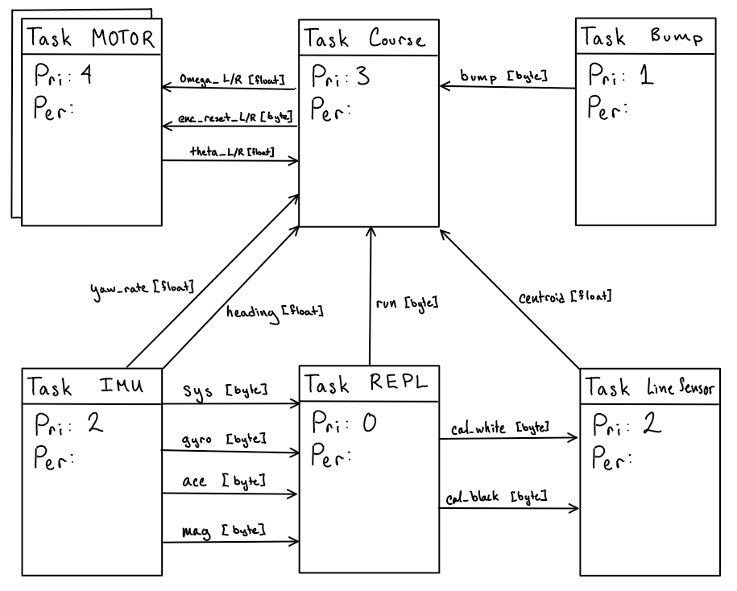

Tasks¶
Our program uses a multitasking task-state paradigm, making use of the ME405 Library provided scheduler and Shares which allows for scheduled execution of generator functions which implement finite state machines with variables shared between tasks as necessary.
Task Structure¶
{kind=link}
Overall 7 Tasks are implemented:
The “Course” Task keeps track of which segement of the course ROMI is in, taking in feedback data from the sensors, operating control loops, and sending setpoint velocities to the 2 motors.
The 2 “Motor” Tasks implement closed loop velocity control on each motor individually, using feedback from the respective encoder.
The “Bump” Task interfaces with the bump sensors, raising a flag if a bump occurs.
The “IMU” Task handles the calibration of the IMU and outputs heading and yaw rate feedback.
The “Line Sensor” Task handles the calibration of the Line Sensor Array and outputs centroid feedback.
Task Profile¶
TASK |
PRI |
PERIOD |
RUNS |
AVG DUR |
MAX DUR |
AVG LATE |
MAX LATE |
|---|---|---|---|---|---|---|---|
Task Left Motor |
4 |
7.0 |
10243 |
1.065 |
1.448 |
1.384 |
26.618 |
Task Right Motor |
4 |
7.0 |
10243 |
1.054 |
1.410 |
2.169 |
27.542 |
Task Course |
3 |
12.0 |
5974 |
0.374 |
22.307 |
2.703 |
40.855 |
Task IMU |
2 |
20.0 |
3584 |
2.378 |
4.518 |
4.180 |
44.229 |
Task Line Sensors |
2 |
22.0 |
3259 |
2.205 |
2.966 |
3.439 |
49.247 |
Task Bump |
1 |
28.0 |
2560 |
0.407 |
0.479 |
7.647 |
115.994 |
Task BT REPL |
0 |
50.0 |
1433 |
4.089 |
26.806 |
92.471 |
1177.450 |